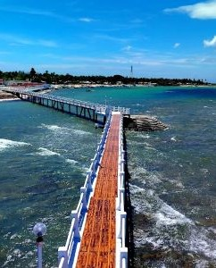
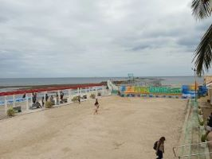
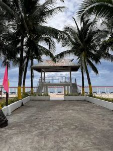
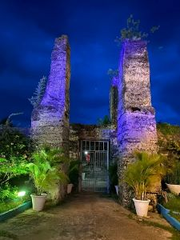
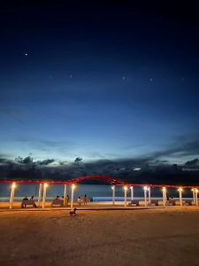
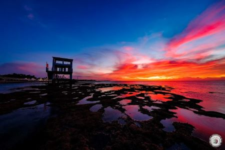
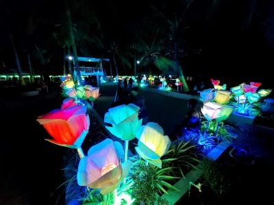

Explore the lush gardens and enjoy the fresh sea breeze as you walk along the picturesque paths.
Perfect for families—have a delightful picnic with beautiful views of the ocean.
Photographers will love the park for its historical structures and natural beauty, perfect for capturing stunning photos.

Morning Glow
Sunrise Serenity

Peaceful Path

Ocean View

Starry Night

Evening Reflections

Night Lights

Quiet Moments